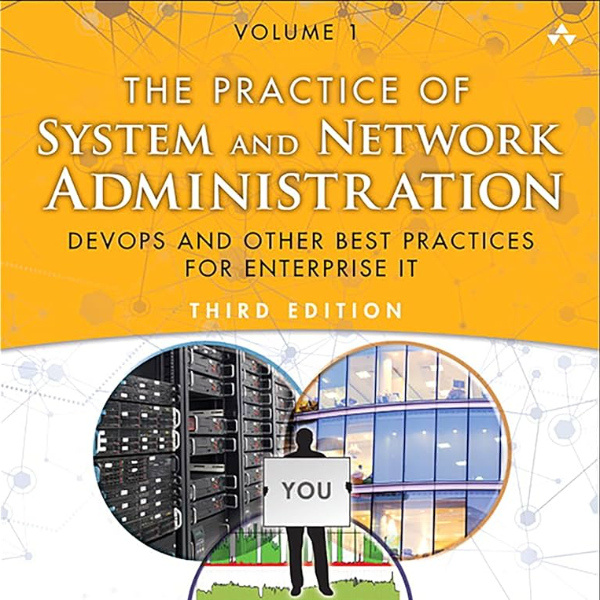

I build and break infrastructure on AWS and Kubernetes, then write about what I learned.
A curated selection of my expertise in DevOps and Cloud Computing
Highlights of my career showcasing infrastructure, automation, and systems work.
Managing web infrastructure, security implementations, and member-facing systems for a professional public adjusters association.
Enterprise IT support for a large agricultural research institution, handling everything from device deployment to incident response.
Production-focused cloud infrastructure, automation & container orchestration.
I document the real debugging process — errors, dead ends, and fixes — because that’s where the actual learning happens.
Python
Practice of System and Network Administration

Industry-recognized credentials validating my expertise in cloud technologies and DevOps practices.
Continuously learning and expanding my skill set with new certifications and technologies.
I'm actively seeking cloud engineering and DevOps roles. My inbox is always open for opportunities, questions, or just a quick hello.